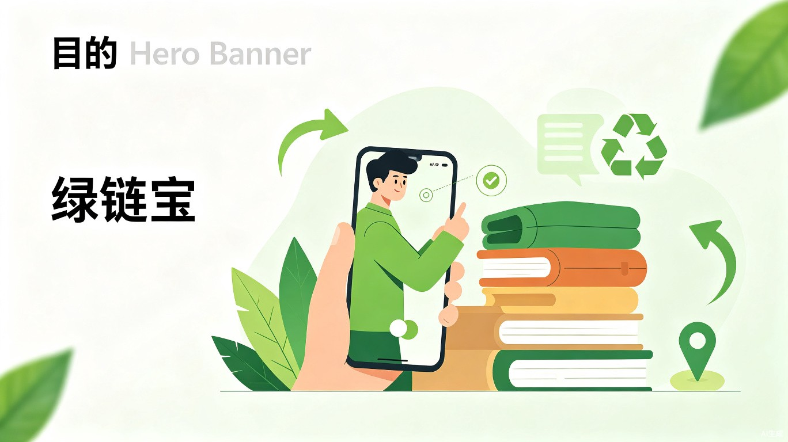

绿链宝
基于AI图像识别与估价的生活服务小程序 —— 让闲置流转更简单，让每一次断舍离都有价值
1创意介绍
创意名称
绿链宝 —— 一款基于AI图像识别与估价的生活服务小程序，定位于微信生态，致力于让闲置物品处理变得简单、透明、可信。
想解决什么问题
当前闲置物品处理面临三大痛点：流程繁琐、回收渠道不透明、买卖双方信息不对称，导致大量可再利用资源被白白浪费。
创意灵感来源
观察到身边很多人因搬家或换季产生大量闲置，但苦于没有便捷的变现或捐赠渠道，最终只能丢弃；同时，二手回收市场鱼龙混杂，缺乏标准化的估价体系，用户权益难以保障。
产品形态
拍照识物自动估价
AI计算机视觉大模型1秒识别品类、品牌、成色，给出市场估价参考
一键发布闲置
自动填充商品信息，省去手动测量、拍照、描述的繁琐流程
社区旧物置换地图
基于LBS发现身边的旧物置换点和回收站点，支持线下面对面交易
2目标用户及痛点
核心用户群体
典型使用场景
当前痛点
❌ 没有绿链宝
- · 手动测量尺寸、拍摄多张照片
- · 逐个平台寻找买家，耗时数小时
- · 容易遭遇"到手刀"恶意砍价
- · 废品回收缺乏正规渠道
- · 被不良商家低价压榨
✅ 使用绿链宝
- · 拍一张照片，AI自动识别估价
- · 一键发布，秒级上架
- · 平台担保交易，杜绝恶意砍价
- · 认证回收商入驻，价格透明
- · 低价值物品可捐赠换积分
3核心功能流程
用户从"发现闲置"到"完成流转"的完整体验路径：
功能亮点
- ✓AI视觉识别引擎 —— 支持服装、图书、数码、家电等200+品类识别，准确率≥95%
- ✓动态估价模型 —— 结合品牌、成色、市场行情，给出合理价格区间建议
- ✓社区置换地图 —— LBS定位周边置换点、回收站、公益捐赠箱
- ✓绿色积分体系 —— 交易/捐赠均可积累积分，兑换环保商品或公益证书
- ✓平台担保交易 —— 资金托管+物流追踪，保障买卖双方权益
4价值与意义
效率提升角度
通过引入AI计算机视觉大模型，用户只需对着闲置物品拍一张照片，系统即可在1秒内识别出物品品类、品牌、成色，并给出合理的市场估价参考。
这极大地缩短了闲置物品的挂牌时间，将原本需要数小时的整理和定价工作压缩到几秒钟内，显著提升了二手物品流转的效率。
社会价值角度
小程序内嵌的"绿色积分"体系鼓励用户将无法直接售卖的低价值物品（如旧衣物、塑料瓶）定向捐赠给公益机构，让每一次断舍离都能转化为对社会的微小善意，推动循环经济的发展。
可持续发展路径
减碳贡献可视化
用户每笔交易/捐赠都可查看对应的碳减排量，让环保行为可感知、可量化
公益机构直连
与正规公益组织合作，确保捐赠物品流向透明、使用合规
循环经济闭环
从"识别-估价-交易-捐赠-积分-再消费"形成完整闭环
5项目总结
绿链宝以AI技术为驱动、以微信生态为载体、以绿色低碳为理念，打造了一款连接闲置资源与循环经济的数字化桥梁。它不仅解决了用户处理闲置物品的切实痛点，更通过"绿色积分"机制将个人行为与社会公益紧密相连，让科技向善、让闲置发光。
核心理念：AI让估价更简单，绿色让流转更有意义